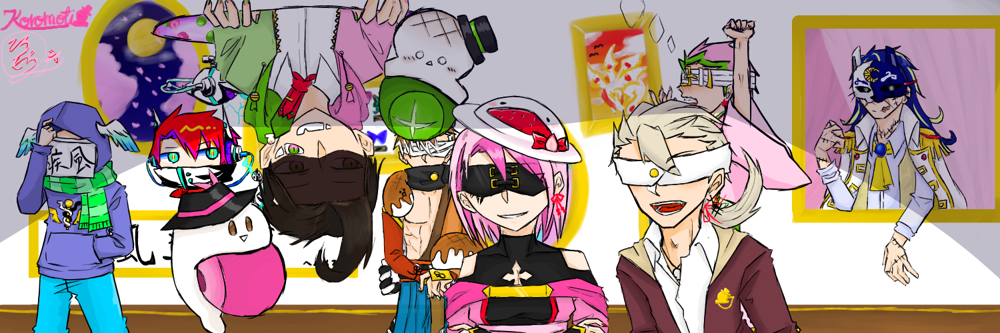
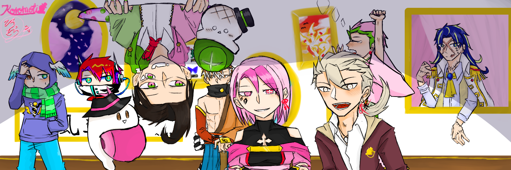
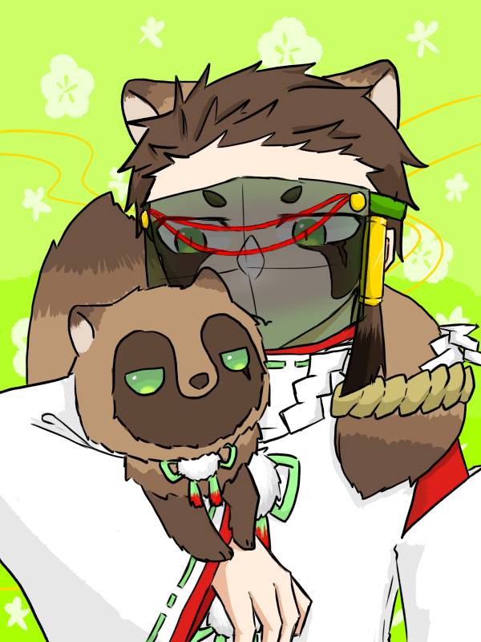

初めましてリアンもしくは古炉餅と申します
創作が好きで基本的にアナログで創作活動をしていますが、時々デジタルにも挑戦しています
料理は揚げ物系以外はレシピさえ見れば初見でも美味しく作れる程度の腕前です
はっきりとした目標はないですが、「絵が描ける、創作ができる」がメリットになる職を探し中です
| OS | Mac、Android |
|---|---|
| 資格・免許 | なし（色彩検定やバーテン資格を考え中） |
これまで作ったデジタル作品の一部です



| 2023年 | 学校法人角川ドワンゴ学園 S高等学校 卒業 |
|---|